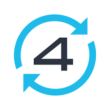

About me
üåç Nationality: Ukrainian üá∫üá¶
üè° Residence: Spain üá™üá∏
üíñ Family: Team of 3 üë©‚Äç‚ù§Ô∏è‚Äçüë®
üèÅ Hobby: üìö üå¥ üóª üö¥ üèä üö£ üé≠
Profile
Senior Software Engineer with + years of experience designing and building scalable backend systems. I specialize in DDD, CQRS, Event-Driven Architecture, Event Sourcing, and Microservices, applying Clean, Layered, and Hexagonal architecture patterns to solve complex business problems.
Experienced in Team Lead and Tech Lead roles — driving architectural decisions, mentoring engineers, and delivering high-quality solutions. Passionate about clean code, continuous improvement, and knowledge sharing through articles, teaching, and open-source contributions.
Articles
I write about software architecture, PHP best practices, and engineering leadership.
- Medium Blog — Architecture & Engineering
- Habr Blog — PHP & DDD (Russian)
- GitHub Blog — Full articles collection
Published
-
PHP Digest – September 2025
DDD, CQRS, EDA, ES, Clean, Layer, Hexagonal in one application
-
PHP Digest – August 2025
Bridges of the digital world: client-server, server-server
-
PHP Annotated – September 2023
A concise explanation of DIP, SOLID, GRASP, CQR, CQRS, hexagonal architecture, layered architecture, modular monoliths, microservices, event-driven architecture, and DDD.
-
PHP Digest No. 202 (April 1 - 30, 2021)
The crossword game is implemented as an example of scalable and highly loaded architecture on Symfony.
Teaching
Technical Auditor
Skills
| Programming | PHP, JS, Delphi, Go |
| Frameworks | Symfony, Laravel, Yii2, Codeigniter (understanding framework-agnostic principle) |
| Stack | MySQL, PostgreSQL, MongoDB, Redis, Elasticsearch, RabbitMQ, Kafka |
| Philosophy | DDD, ADR, GRASP, SOLID, KISS, DRY, YAGNI |
| Architecture | Clean, Layered, CQRS, Hexagonal, EDA, Modular, Microservice Architecture |
| Design | C4 Diagrams, PlantUML, 12 factor architecture, API specifications, Technical documentation |
| Tests | PhpUnit, Codeception, Postman |
| Tools | Deptrac, PhpCsFixer, Psalm, PHPStan, PHPDoc |
| DevOps | Docker, GitLab CI, GitHub Actions |
| AI | Claude Code, AI Agents development, Prompt Engineering |
| Others | GitFlow, Teamwork, Mentoring, Onboarding, Organizational, Motivation, Learn and Adapt |
| Management | SAFE, SCRUM, MoSCoW |
Achievements
-
Creating a unified admin panel for microservices architecture: Development of a manifest and methods for communication between services. The goal was to create a flexible admin panel that does not require constant adjustments with changes in the system architecture.
Development of a custom billing CRM: Creating a suite of services, including CardStore, PaymentIntegration, Notification, and RiskAssessment. The goal was move out from paid payment gateways and save business money.
- Moving a legacy project from outsourcing to in-house development: Forming a team, developing a technical roadmap, resolving issues and incidents and many other things. We implemented a step-by-step refactoring process. Through our collaborative efforts, we were able to transform a complex and confusing project into a stable and efficient product. The goal was for the project to operate without interruptions while addressing business tasks without pause in work.
- Started conducting technical audits as an independent expert: Leveraging extensive experience in PHP development, architecture design, and team leadership, began offering professional audits for code quality, architecture, security, performance, and development workflows. Through word-of-mouth recommendations and proven expertise, built a reputation as a trusted technical consultant helping businesses identify and resolve critical issues in their software projects.
Career History
-
Forex: Designed a separate, service-oriented architecture to handle billing workflows, ensuring flexibility and maintainability. Integrate Zoho CRM, Risk Assessment Matrix, Notify services.
Open banking:Yapily
Payment CRM: Konnektive, Sticky. And payment gateways: BitPay API, Fibonatix, MaxPay, ACI PayOn, EmerchantPay, Checkout, Paytend, Trust Payments and others... Developed a custom billing solution with microservices for better scalability and modularity.
Marketplace: Transitioned the project from outsourcing to in-house development, forming a dedicated team, creating a technical roadmap, and implementing step-by-step refactoring to enhance stability and performance.
-

Promoted the Domain-Driven Design (DDD) approach within the team to improve project focus and alignment with business goals.
Boosted the speed of functional testing by 3x, enhancing overall development efficiency. Implemented new gamification features to increase user engagement.
Integrated a new game provider, expanding the platform's offerings. Compressed data to address SEO performance issues. Integrated a CI/CD pipeline to streamline and automate the deployment process.
-
Integrated various APIs, including Customer.io, Twilio Lookup, HashiCorp Vault, and Document Plagiarism APIs, to enhance functionality and security.
Separated the Core bundle into functional modules, following the Domain-Driven Design (DDD) approach. Created a Docker environment for streamlined local development.
Migrated the project from Errbit to Sentry for improved error tracking and monitoring. Integrated Graylog for centralized log management and enhanced troubleshooting.
-
Senior PHP Developer/Team Lead
Jun 2014 - Dec 2016 · 2 yrs 7 mos
Kiev, Ukraine
Feature Development: Developed a Skype API messenger integration using PHP and Delphi.
Module Development: Built an Admin CRM from scratch using Laravel and PHP 7. Led full-stack website development projects using WordPress, Laravel, PHP, and JavaScript.
-

Module and Feature Development: Developed a coupons module to enhance promotional capabilities. Developed toolbars for various platforms, including 4shared Toolbar, 2shared Toolbar, and 4Sync Toolbar.
Server and Logging Systems: Created a logging server for all systems using the Syslog protocol (UDP/IP) to centralize log management and improve monitoring.
Scripts and Automation: Wrote FastReport scripts for automated report generation. Developed DLLs for LoadRunner to enable customized load testing scenarios Created online and offline installers using NSIS (Nullsoft Scriptable Install System).
COM and DLL Development: Developed various COM objects to support integration and automation tasks.
Education
-
Bohdan Khmelnytsky National University of Cherkasy
Grade: Master
Computer and Information and Biomedical technology
2006 - 2011 · 5 yrs